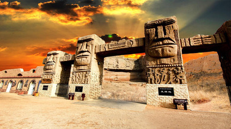
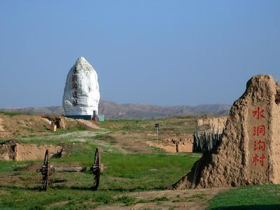
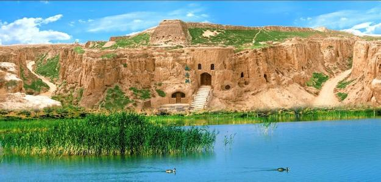
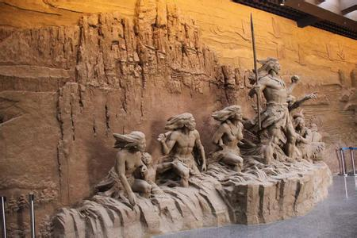
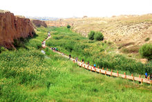

|
||||||||||||
|
||||||||||||
|  |  |  |  | |||||||||
| 地理环境 | 历史文化 | 美丽景点 | 水洞足迹 | |||||||||
|
宁夏水洞沟旅游区位于灵武市临河镇，西距银川市19公里，南距灵武市30公里，距河东机场11公里，地处银川河东旅游带的核心部位，北与内蒙古鄂尔多斯市相接，是连接宁蒙旅游的纽带，占地面积7.8平方沙湖距离水洞沟70公里，驾车一黄沙古渡距离水洞沟40公里，驾车半个小时可到。 水 地形地貌： 洞沟地形地貌 水洞沟地处鄂尔多斯台地南缘，大自然造就的雅丹地貌，使这里充满了雄浑、奇特的荒谷神韵，经历了千万年的风沙雕蚀，这里集中了魔鬼城、卧驼岭、摩天崖、断云谷、柽柳沟等二十多处土林奇绝景观，使人望而生奇，大有地老天水洞沟 交通指南 ： 公交路线 线路一：从银川北门旅游汽车站上午9点至下午3分发水洞沟旅游直通车。 自驾游游客路线（河东机场方向，临河下高速） 线路一：银川出发→大团结广场→银青高速路→临河出口→银青高速辅道→水洞沟 线路二：黄河东滨河大道→银青高速辅道→水洞沟
1919年，比利时传教士肯特在途经水洞沟时，落脚在“张三小店”。偶然间，肯特在水洞沟断崖上发现了一具犀牛头骨化石和一件经过人工打制的石英岩石片。不久，他在天津遇到法国地质古生物学家桑志华，并把自己在宁夏的发现告诉了他。1923年6月，桑志华和著名学者德日进在结束对甘肃部分地区的考察之后来到水洞沟。他们信步走到断崖边，发现了裸露在地表的哺乳动物化石。不久，一场历时十二天的考察发掘就此展开，他们总共发掘出了300多公斤的石制品和动物化石，主要包括石核、刮削器、尖状器等旧石器。 1960年夏季，中苏古生物联合考察队开进水洞沟，对遗址进行了第二次发掘。 1963年，被称为“中国旧石器考古学之父”的裴文中亲自带队，又进行了第三次发掘。 1980年宁夏博物馆、宁夏地质局联合考古队对水洞沟的考古发掘，则是第四次。 2003年至2007年，数十位专家学者满怀希望又进行了新一轮的考古发掘。这次，是由宁夏文物考古研究所和中国科学院古脊椎动物与古人类研究所联合组队。这次考古，参加人数最多、历时最长、发掘范围最大，收获也最丰硕。这次，不仅调动了GPS定位仪、全站仪、摄像机等先进设备，而且邀请了地质学、年代学、古人类学、古环境学的专家到现场研讨、授课，其考古成果也格外引人注目。 在水洞沟发现的90年间，史前考古大家裴文中、贾兰坡，中科院院士刘东 遗址博物馆 宁夏旅游景点水洞沟遗址博物馆 宁夏银川旅游景点水洞沟映象3万年实景演绎 银川旅游景点水洞沟张三小店 宁夏银川旅游景点水洞沟村 
水洞沟长城观景台是宁夏唯一一座、一脚跨两省的长城观景台。在水洞沟旅游区您可以闲庭信步于明长城脚下，或者登上新修建的长城观景台，一脚跨两省，站在长城上放眼眺望，北边的毛乌素沙漠，是浓厚西北大漠风貌；而在南边的水洞沟，湖泊湿地、高峡平湖尽显江南秀色，给您别样的体验。 从水洞沟到红山堡之间，有长约4公里的峡谷，本是大自然的“杰作”，但明代时，这又成了长城“深沟高垒”防御体系的重要组成部分。峡谷两岸经常年的风雨剥蚀，沟壑纵横，深厚的黄土经长期的雨水冲刷，土柱突兀壁立，造型奇特，形成了“土林”。“土林”又经大自然鬼斧神工雕琢般地形成千奇百怪的形像。有的像僧人登高远眺，似在期待来者；有的宛如一对恋人，相亲相依；有的如夫妻相敬，双方对拜，琳琳总总，各具形态，给人以无尽的遐想。在峡谷的两边的崖壁上有明代将士修建的藏兵洞，它充分显示了古代人民的军事智慧和聪明才智 在峡谷两侧悬崖上的一个个黑洞，就是著名的“藏兵洞”，所谓藏兵洞，是红山堡守军由地上转入地下，隐蔽军队，保护自己，伺机出击，或在空旷处设伏兵的地道。这在全国是唯一保存最为完整的古代立体军事防御体系。在我国的长城防御体系中，把长城、城堡和地下藏兵洞紧密联系在一起的防御系统，全国这是独一处。现在展现在大家眼前的藏兵洞是我国最早的地道战遗址和原型。如果说抗战时期，八路军和游击队的地道战能让敌人胆战心惊，闻风丧胆，那么我们可以想象500多年前明代的边塞守军也是以同样的智慧和勇敢将侵略者挡在了长城之外。 奇特的藏兵洞高出沟底10多米，蜿蜒曲折于悬壁之上中，上下相通，左右相连，洞中分叉路口颇多，左右盘旋，犹如迷宫久久不见尽头。洞内辟有居室、粮食储藏室、水井、灶台、兵器库、火药库、炮台、陷阱、暗器孔道等设施。置身其中，可立时领略到古地道战在设计上的出人意料、功能上的灵巧隐蔽、结构上的悬妙复杂，古人的聪明才智，在这里体现得淋漓尽致，令人叹为观止。 |
||||||||||||
| 网站制作：马宁 本站只为介绍宁夏的美丽风光而创建，部分内容采集自互联网，版权归原作者所有 作者联系方式 E-mail: QQ: |
||||||||||||